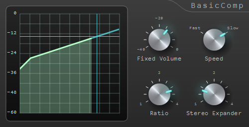
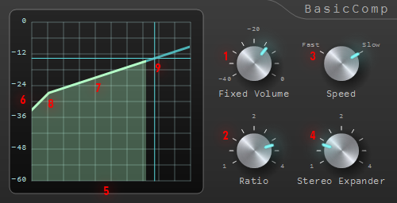

BasicCompは、 自然にダイナミックレンジを圧縮することに特化した、 高音質のVSTコンプレッサープラグインです。 自然さに特化しているのでマスタリング、ボーカル、ドラムに最適です。 音圧爆上げくんの内部処理でも使われています。 Fixed Volumeという、レシオを変えても出力音量が変わらないようにする機能を持つので、 出力音量の変化に惑わされることなくレシオによるダイナミックレンジの変化だけを集中して聴くことができます。 Speedという一つの設定によって、 アタック、リリース、ルックアヘッドの設定を自動で行う機能を持つので、 誰でも簡単に距離感/奥行きとダイナミックレンジの操作に最適な値を設定することができます。 Stereo Expanderを使うと、 一つのパラメータを操作するだけで、自然に音場を広げることができます。
BasicComp.vst3とBasicComp64.vst3を以下の場所にコピーしてください。
DAWがVST3に対応していない場合は、VST2版(BasicCompVst2.dll, BasicComp64Vst2.dll)を以下の場所にコピーしてください(DAWによってインストール先が異なる場合があります)。
ここではBasicCompの使い方を順番に説明していきます。
※文中のカッコ内の数字は画面上の数字に対応します。
Speed(3)を以下の2種類の設定から選んでください。
BasicCompではパラメータの数と設定できる範囲を意図的に絞っています。 音楽制作では、トライアンドエラーを繰り返しながら各プラグインの最適なパラメータ設定を模索することが多いですが、 一般的なコンプレッサーでは調節する必要のあるパラメータが多いので、トライアンドエラーに時間がかかります。 その結果、限られた時間内で全てのパラメータをベストに設定しきるということは難しいです。 BasicCompでは、 アルゴリズムによって自動設定できるパラメータを積極的に自動設定して、 調節が必要なパラメータを減らすことで、 より重要なパラメータに集中できるようにしています。 一般的なコンプレッサーと比べて設定できるパラメータに違いがあるので、 その対応付けなども含めて、 BasicCompの技術寄りの部分を説明していきます。
Fixed Volumeは、簡単に言えばメイクアップゲインとスレッショルドを自動で調節してくれる機能です。 一般的なコンプレッサーではRatioを変化させると音量が変わってしまうので、 その都度メイクアップゲインを調節しないと出力音量を安定させることができません。 BasicCompでは、あらかじめ入力音の平均値付近にFixed Volumeをあわせておくことで、Ratioを変えても出力音量が変わらないようにすることができます。 この機能によって、出力音量の変動に気をとられることなく、純粋にダイナミックレンジの変化を聴くことができます。 正確には、Fixed Volumeは入力音と出力音の音量が同じになるようなポイントです。 例えば、Fixed Volumeが-20dBのときは、-20dBの入力音がそのまま音量が変化することなく-20dBで出力されます。
スレッショルドは、Fixed Volumeから40dB下げた値に自動設定されます。 これはダイナミックレンジが40dB以下で、S/N比が40dB以上の入力音源に最適な値なので、 BasicCompが得意とするマスタリング、ボーカル、ドラムなどを含め、ほとんどの音源に対して有効です。
Speedは、一般的なコンプレッサーにおけるアタック(Attack)、リリース(Release)、ルックアヘッド(Look-ahead)に対応しています。 ただし、BasicCompではそれらを個別に設定できるようにはせずに、 Speedによって自動で設定するようにしています。 設定値は、音響心理学の研究結果を元に、 自然にダイナミックレンジを圧縮することに特化した値を選んでいます。 Fastは音の距離感や奥行きの操作に適した値、 Slowはダイナミックレンジの操作に適した値になっています。
Stereo Expanderは、音場を広げてステレオ感を強めてくれる機能です。 Pannerプラグインに付属していることが多い、 MS(Mid-Side)に信号を分けてSide成分を強めるだけの単純なStereo Expanderとは違い、 LRチャンネルの音が互いに逆相で交じり合うことを防いでいるので、 不自然な音になることが少ないです。 アルゴリズムは、MSコンプレッション(Mid-Side Compression)をベースにしていますが、 パラメータの自動設定により、一つのパラメータで手軽に音場を広げることができます。 自動音量補正が働くので、 MSコンプレッションのように副作用としてダイナミックレンジが小さくなってしまうことが無いです。 全体のダイナミックレンジはRatioで、ステレオ感はStereo Expanderで独立に調節することが可能です。 そのため、Ratioを1に設定することでStereo Expanderだけを使用することもできます。
BasicCompのビルドには以下のライブラリが使用されています。
https://github.com/kazuho/picojson
Copyright 2009-2010 Cybozu Labs, Inc. Copyright 2011-2014 Kazuho Oku All rights reserved. Redistribution and use in source and binary forms, with or without modification, are permitted provided that the following conditions are met: 1. Redistributions of source code must retain the above copyright notice, this list of conditions and the following disclaimer. 2. Redistributions in binary form must reproduce the above copyright notice, this list of conditions and the following disclaimer in the documentation and/or other materials provided with the distribution. THIS SOFTWARE IS PROVIDED BY THE COPYRIGHT HOLDERS AND CONTRIBUTORS "AS IS" AND ANY EXPRESS OR IMPLIED WARRANTIES, INCLUDING, BUT NOT LIMITED TO, THE IMPLIED WARRANTIES OF MERCHANTABILITY AND FITNESS FOR A PARTICULAR PURPOSE ARE DISCLAIMED. IN NO EVENT SHALL THE COPYRIGHT HOLDER OR CONTRIBUTORS BE LIABLE FOR ANY DIRECT, INDIRECT, INCIDENTAL, SPECIAL, EXEMPLARY, OR CONSEQUENTIAL DAMAGES (INCLUDING, BUT NOT LIMITED TO, PROCUREMENT OF SUBSTITUTE GOODS OR SERVICES; LOSS OF USE, DATA, OR PROFITS; OR BUSINESS INTERRUPTION) HOWEVER CAUSED AND ON ANY THEORY OF LIABILITY, WHETHER IN CONTRACT, STRICT LIABILITY, OR TORT (INCLUDING NEGLIGENCE OR OTHERWISE) ARISING IN ANY WAY OUT OF THE USE OF THIS SOFTWARE, EVEN IF ADVISED OF THE POSSIBILITY OF SUCH DAMAGE.
VST GUI 4.3
-----------------------------------------------------------------------------
VSTGUI LICENSE
(c) 2015, Steinberg Media Technologies, All Rights Reserved
-----------------------------------------------------------------------------
Redistribution and use in source and binary forms, with or without modification,
are permitted provided that the following conditions are met:
* Redistributions of source code must retain the above copyright notice,
this list of conditions and the following disclaimer.
* Redistributions in binary form must reproduce the above copyright notice,
this list of conditions and the following disclaimer in the documentation
and/or other materials provided with the distribution.
* Neither the name of the Steinberg Media Technologies nor the names of its
contributors may be used to endorse or promote products derived from this
software without specific prior written permission.
THIS SOFTWARE IS PROVIDED BY THE COPYRIGHT HOLDERS AND CONTRIBUTORS "AS IS" AND
ANY EXPRESS OR IMPLIED WARRANTIES, INCLUDING, BUT NOT LIMITED TO, THE IMPLIED
WARRANTIES OF MERCHANTABILITY AND FITNESS FOR A PARTICULAR PURPOSE ARE DISCLAIMED.
IN NO EVENT SHALL THE COPYRIGHT OWNER OR CONTRIBUTORS BE LIABLE FOR ANY DIRECT,
INDIRECT, INCIDENTAL, SPECIAL, EXEMPLARY, OR CONSEQUENTIAL DAMAGES (INCLUDING,
BUT NOT LIMITED TO, PROCUREMENT OF SUBSTITUTE GOODS OR SERVICES; LOSS OF USE,
DATA, OR PROFITS; OR BUSINESS INTERRUPTION) HOWEVER CAUSED AND ON ANY THEORY OF
LIABILITY, WHETHER IN CONTRACT, STRICT LIABILITY, OR TORT (INCLUDING NEGLIGENCE
OR OTHERWISE) ARISING IN ANY WAY OUT OF THE USE OF THIS SOFTWARE, EVEN IF ADVISED
OF THE POSSIBILITY OF SUCH DAMAGE.
-----------------------------------------------------------------------------
VST SDK 3.6.6
----------------------------------------------------------------------------- LICENSE (c) 2016, Steinberg Media Technologies GmbH, All Rights Reserved ----------------------------------------------------------------------------- Redistribution and use in source and binary forms, with or without modification, are permitted provided that the following conditions are met: * Redistributions of source code must retain the above copyright notice, this list of conditions and the following disclaimer. * Redistributions in binary form must reproduce the above copyright notice, this list of conditions and the following disclaimer in the documentation and/or other materials provided with the distribution. * Neither the name of the Steinberg Media Technologies nor the names of its contributors may be used to endorse or promote products derived from this software without specific prior written permission. THIS SOFTWARE IS PROVIDED BY THE COPYRIGHT HOLDERS AND CONTRIBUTORS "AS IS" AND ANY EXPRESS OR IMPLIED WARRANTIES, INCLUDING, BUT NOT LIMITED TO, THE IMPLIED WARRANTIES OF MERCHANTABILITY AND FITNESS FOR A PARTICULAR PURPOSE ARE DISCLAIMED. IN NO EVENT SHALL THE COPYRIGHT OWNER OR CONTRIBUTORS BE LIABLE FOR ANY DIRECT, INDIRECT, INCIDENTAL, SPECIAL, EXEMPLARY, OR CONSEQUENTIAL DAMAGES (INCLUDING, BUT NOT LIMITED TO, PROCUREMENT OF SUBSTITUTE GOODS OR SERVICES; LOSS OF USE, DATA, OR PROFITS; OR BUSINESS INTERRUPTION) HOWEVER CAUSED AND ON ANY THEORY OF LIABILITY, WHETHER IN CONTRACT, STRICT LIABILITY, OR TORT (INCLUDING NEGLIGENCE OR OTHERWISE) ARISING IN ANY WAY OUT OF THE USE OF THIS SOFTWARE, EVEN IF ADVISED OF THE POSSIBILITY OF SUCH DAMAGE. -----------------------------------------------------------------------------